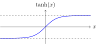
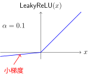

Activation Functions#
Essence of Activation Functions: Partitioning Feature Space#
From Linear Regression to Logistic Regression#
You may be familiar with linear regression: \(y = wx + b\), which fits data using a straight line and outputs continuous values. However, in many cases we need to perform classification—predicting not continuous values, but deciding whether something belongs to “Class A or Class B”.
Question: What happens if we use linear regression for binary classification?
Suppose we want to distinguish “spam emails” from “legitimate emails”. If we use linear regression output \(y = wx + b\), we get a real value. But classification requires a probability—“how likely is this email to be spam?”
Logistic regression solves this problem by applying a Sigmoid function over the linear regression output:
Sigmoid squashes any real number into the \((0, 1)\) interval, which can be interpreted directly as a probability.
Decision Rule of Logistic Regression:
If \(\sigma(wx + b) \geq 0.5\), predict Class 1
If \(\sigma(wx + b) < 0.5\), predict Class 0
This is equivalent to checking whether \(wx + b \geq 0\) or \(wx + b < 0\)—which in feature space means partitioning two regions using a straight line (or hyperplane). Logistic regression can only learn linear decision boundaries.
Why We Need Activation Functions#
Logistic regression solves binary classification, but has a fundamental limitation: it can only learn linear boundaries. In reality, decision boundaries for many classification problems have complex non-linear shapes—such as the XOR problem, which logistic regression cannot solve.
Multilayer Perceptrons (MLPs) break through this limitation:
First layer: Multiple neurons in parallel, each learning a different linear boundary
Activation functions: Introduce non-linearity to “fold” space
Subsequent layers: Combine these folded features to learn complex boundaries
What is “Space”?#
In deep learning, space refers to the feature space of input data:
A sample corresponds to a point in space
Each feature corresponds to a coordinate axis
An MNIST image (784 dimensions) is a point in a 784-dimensional space
Every layer of a neural network is transforming this space:
Linear transformation (\(Wx + b\)): Rotation, scaling, translation
Non-linear activation: “Folds” space, making linearly inseparable data separable
Formation of Decision Boundaries#
Without activation functions, no matter how many layers are stacked, the network can only learn linear transformations—because the composition of multiple linear transformations remains linear: \(f(W_2(W_1x)) = W_2W_1x = W'x\). Activation functions introduce non-linearity, enabling the network to partition complex decision boundaries in space.

Complex Decision Boundary Formed by a 3-Neuron Network#
Network Architecture Breakdown:
This network has only 3 hidden neurons, yet forms such a complex decision boundary. Let us break it down layer by layer:
graph TD
A["输入: (x, y)"] --> B["n₁ = Swish(2x - 1)"]
A --> C["n₂ = Swish(3x + 1)"]
A --> D["n₃ = Swish(y - 2)"]
B --> E["n₁ + n₃"]
D --> E
E --> F["隐藏层输出 = n₂ × (n₁ + n₃)"]
C --> F
F --> G["Sigmoid(...) > 0.5"]
G --> H["分类结果"]
Mathematical Expression:
Basic activation functions:
Swish: Smooth variant of ReLU
Sigmoid: Squashes values into 0–1
Hidden layer neurons (3 independent linear transformations + Swish):
Output decision boundary:
Why can it form complex shapes?
Each Swish neuron defines a “soft” half-plane:
\(n_1 = r(2x-1)\): Significantly activated when \(2x-1 > 0\) (i.e., \(x > 0.5\))
\(n_3 = r(y-2)\): Significantly activated when \(y > 2\)
Note that Swish is not a simple 0/1 switch, but a smooth transition
Feature combination \(n_1 + n_3\):
“Superimposes” activations from two directions
Strongest in the region where \(x > 0.5\) and \(y > 2\)
Gating mechanism \(n_2 \times (\dots)\):
\(n_2\) acts as a “switch”, controlling which regions can output
When \(n_2\) is very small, no matter how large \((n_1+n_3)\) is, output remains close to 0
Sigmoid Final Decision:
Converts continuous values into probabilistic judgments
\(>0.5\) classified as Class A (purple region)
Intuitive Understanding: This network is like “sculpting” in space—first defining a coarse region with \(n_1, n_3\), then fine-trimming it with \(n_2\), ultimately creating an irregular shape.
Interactive exploration: Desmos (drag sliders to adjust parameters and observe shape changes)
Core Insights:
From this 3-neuron example, we can see the key mechanisms by which neural networks partition decision boundaries:
Each neuron defines a “soft” boundary:
Swish activation turns the linear boundary \(wx + b = 0\) into a smooth transition region
Unlike ReLU’s hard switch, Swish provides a gradual activation intensity
This allows the network to learn smoother, more complex boundaries
Non-linear combinations create complexity:
The multiplication operation \(n_2 \times (n_1 + n_3)\) is key
Without non-linear activation functions, such combinations would be impossible
This demonstrates the essential role of non-linear activation: allowing combinations of simple linear boundaries to generate complex shapes
Interplay between “Gating” and “Features”:
\(n_1, n_3\) provide base features (responses to x and y)
\(n_2\) acts as a gate, deciding which regions can “pass through”
This co-working pattern recurs throughout deep networks
Complex classification with very few neurons:
Just 3 neurons are sufficient to form non-convex, non-linear decision regions
This indicates that neural network expressiveness comes from non-linear combinations, rather than merely increasing neuron count
Depth (multi-layer non-linear combination) is more important than width (single-layer neuron count)
Key Takeaway: Non-linear activation functions allow neural networks to combine, transform, and superimpose simple linear decision boundaries into arbitrarily complex shapes. Without non-linear activation functions, no matter how many layers are used, the network can only learn a linear classifier: \(f(W_2(W_1x)) = W_2W_1x = W'x\).
Sigmoid Function#
Sigmoid maps any real number into \((0, 1)\), providing a smooth non-linear transformation:
Derivative: \(\sigma'(x) = \sigma(x)(1 - \sigma(x))\), with a maximum value of \(0.25\) at \(x=0\). This derivative form plays a crucial role in Backpropagation Algorithm.
Advantages:
Outputs can be interpreted as probabilities
Smooth and differentiable
Limitations:
Vanishing Gradient: When \(|x|\) is large, the gradient approaches 0, causing gradient decay during Backpropagation Algorithm.
Not Zero-Centered: Outputs are always positive

Sigmoid Function
Tanh Function (Hyperbolic Tangent)#
Tanh is a “zero-centered” version of Sigmoid:
Derivative: \(\tanh'(x) = 1 - \tanh^2(x)\), with a maximum value of \(1\) at \(x=0\)
Advantages over Sigmoid:
Zero-centered output (-1 to 1)
Stronger gradient signal (maximum gradient is 4 times that of Sigmoid)
Limitations: Still suffers from vanishing gradients

Tanh Function
ReLU Function (Rectified Linear Unit)#
ReLU [NH10] became mainstream following the success of AlexNet in 2012:
Derivative: \(\text{ReLU}'(x) = \begin{cases} 1 & x > 0 \\ 0 & x < 0 \end{cases}\)
Core Advantages:
Mitigates Vanishing Gradient: Gradient is constantly 1 in the positive region
Computationally Efficient: Requires only a threshold operation
Sparse Activation: Roughly 50% of neurons output 0
Issue: “Dying ReLU”—if inputs remain negative, gradients stay 0 permanently, deactivating the neuron indefinitely

ReLU Function
Leaky ReLU and Variants#
To address the dying ReLU problem, Leaky ReLU assigns a small slope to the negative region:
where \(\alpha\) is typically set to 0.01.
Advantages:
Non-zero gradient in the negative region prevents dying neurons
Retains the computational efficiency of ReLU
Advanced Variants:
PReLU: \(\alpha\) treated as a learnable parameter
ELU: Uses an exponential function in the negative region for smoothness

Leaky ReLU Function
Swish Function#
Discovered in 2017 by Prajit Ramachandran et al. at Google Brain using neural architecture search [RZL17]. Its design reflects a modern trend in deep learning research: discovering new activation functions through automated methods.
where \(\beta\) is an optional learnable parameter (usually set to 1.0).
Properties:
Self-Gating Mechanism: Swish treats input \(x\) as the gate and \(\sigma(\beta x)\) as the gating signal, computing element-wise multiplication between \(x\) and \(\sigma(\beta x)\).
Smooth Non-Monotonic: Unlike ReLU, Swish is non-monotonic and exhibits a small negative dip in the negative domain.
Learnable Parameter: \(\beta\) can be trained, allowing the network to adaptively adjust gating intensity.
Empirical Validation: Extensively verified through experiments to outperform ReLU across multiple tasks.
Relationship with ReLU
As \(\beta \to \infty\), \(\sigma(\beta x) \to \text{step}(x)\), and Swish approaches ReLU:

Swish Function
Softmax Function#
Softmax is the standard output layer activation function for multi-class classification, converting logits into a probability distribution:
Key Properties:
Outputs sum to 1 and can be interpreted as probabilities
Exponentially amplifies differences: high scores become higher, low scores lower
Classes are mutually competitive: an increase in one class probability decreases others
Interplay with Cross-Entropy Loss:
Concise gradient form: \(\frac{\partial L}{\partial x_i} = \text{softmax}(x_i) - y_i\)

Softmax Transformation Diagram
Activation Function Selection Guide#
Scenario |
Recommended Choice |
Rationale |
Caveats |
|---|---|---|---|
Hidden layer (default) |
ReLU |
Fast computation, well-behaved gradients |
Watch learning rate to avoid dying neurons |
Hidden layer (deep networks) |
Leaky ReLU / ELU / Swish |
Avoids vanishing gradients and dying neurons |
ELU and Swish are slightly slower to compute |
Binary classification output |
Sigmoid |
Output as probability |
Unsuitable for hidden layers |
Multi-class classification output |
Softmax |
Output probability distribution |
Pair with cross-entropy loss |
Summary#
Activation functions are the source of non-linear expressiveness in neural networks:
Geometric perspective: Each activation function defines how input space is partitioned
Gradient perspective: The derivative of an activation function determines gradient flow during backpropagation
Practical perspective:
ReLU is the default choice for hidden layers
Softmax is the standard choice for multi-class classification outputs
The vanishing gradient problem motivated the development of ReLU and its variants
Having understood how Activation Functions introduce non-linearity, we will explore Loss Functions—how to quantify prediction quality and transform training into an optimization problem solvable via Gradient Descent and Optimization Algorithms.
References
Contributors and Revision History
View detailed revision history
-
e2bc8802026-06-13 - Heyan Zhu: fix: missing bib keys in pdf output -
d7c9da72026-05-12 - Heyan Zhu: docs: update sphinx only filter from not pdf to not latex -
a954ca52026-05-11 - Heyan Zhu: docs: revise and restructure documentation, fix formatting, and move env setup and sphinx guide to a separate appendix section -
f159d562026-05-08 - Heyan Zhu: fix: address complaints from the linter -
42a2ebc2026-05-02 - Heyan Zhu: feat(docs): add inception and resnet modules with related content -
b55c3842026-05-01 - Heyan Zhu: docs: fix document cross-references and add anchor tags -
4f5009f2026-04-28 - Heyan Zhu: docs: add detailed explanations for neural network concepts -
59126f42026-04-26 - Heyan Zhu: docs(math-fundamentals): update content structure and add citations -
ae2053f2026-04-26 - Heyan Zhu: docs(math-fundamentals): add task-formulations and update related content -
756a7932026-04-25 - Heyan Zhu: docs(math-fundamentals): update content structure and improve explanations